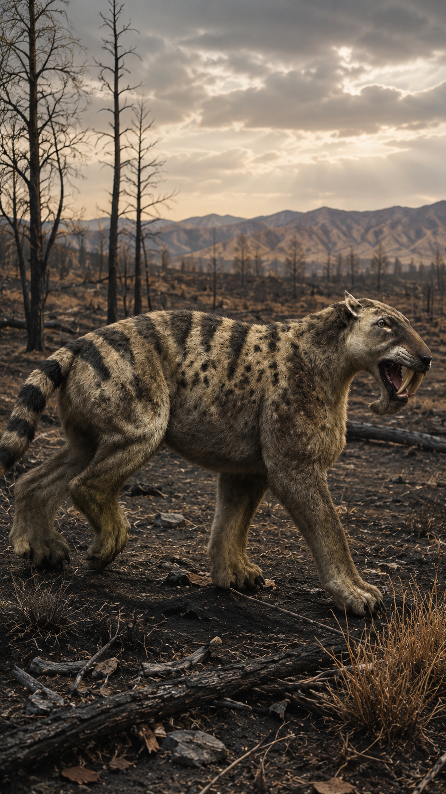
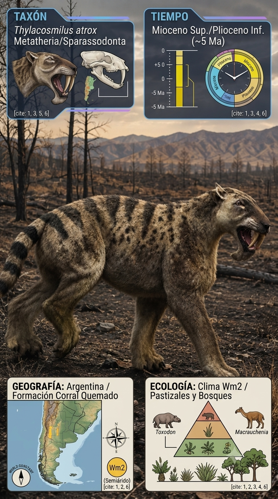

Paleoficha de Thylacosmilus


Periodo: Mioceno Superior – Plioceno
Edad: Hace aproximadamente entre 7 y 3 millones de años.
Dieta: Carnívoro hipercarnívoro.
Distribución: Formación Ituzaingó, Mesopotamia argentina.
TAXÓN:
Thylacosmilus atrox
CLADO:
Sparassodonta (Metatheria)
DIETA:
Carnívoro hipercarnívoro especializado en grandes presas.
TAMAÑO:
Entre 1,2 y 1,5 metros de longitud, con una constitución robusta.
LOCOMOCIÓN:
Terrestre; depredador de emboscada con extremidades anteriores muy potentes.
TIEMPO:
Mioceno Superior – Plioceno, hace aproximadamente entre 7 y 3 millones de años.
GEOGRAFÍA:
Formación Ituzaingó, Mesopotamia argentina (Sudamérica).
EQUIVALENCIA PALEOGEOGRÁFICA:
Llanuras aluviales y sabanas del Cenozoico sudamericano.
AMBIENTE PALEOECOLÓGICO:
Sabana abierta con bosques galería y grandes sistemas fluviales.
ECOLOGÍA:
• Flora: Gramíneas, vegetación de sabana y árboles caducifolios en las riberas.
• Fauna secundaria: Toxodon, Macrauchenia y aves del terror (Phorusrhacidae).
• Nicho: Superdepredador de emboscada, utilizando sus enormes caninos para infligir heridas profundas en el cuello de grandes herbívoros.
• Relaciones: Compartía el nivel trófico superior con las aves del terror, representando un extraordinario ejemplo de convergencia con los felinos dientes de sable.
CLIMA:
Wm13 (Sabana cálida). Clima cálido, semi-húmedo y marcadamente estacional.
ESTADO ECOLÓGICO:
Estable. Uno de los depredadores más singulares del Cenozoico sudamericano y un ejemplo excepcional de evolución convergente con los mamíferos placentarios dientes de sable.
Vídeo PalEntropía:
▶ Ver Short en YouTube